Префектура Нагасаки · Ики, Цусима, Гото · история
Ики, Цусима и Гото: пограничные острова Нагасаки, где начинался путь на материк
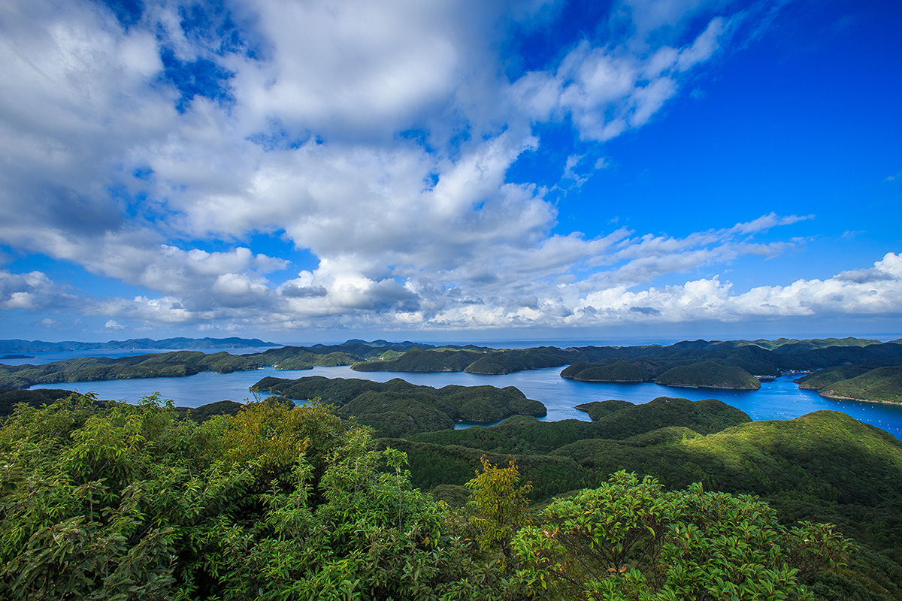
В префектуре Нагасаки 1479 островов, и самые дальние из них стоят ближе к Корее, чем к Токио. Ики, Цусима и Гото с древности были перевалочными пунктами на морском пути к материку, и следы этих связей видны здесь до сих пор.
Наследие
Острова на границе
Острова Нагасаки лежат на полпути между Японией и материком. С древних времён через них шли морские пути, и здесь встречались люди, товары и идеи. Особенно тесными были связи с Корейским полуостровом и Китаем.
Три группы пограничных островов, Ики, Цусима и Гото, получили статус японского наследия под общим названием «Пограничные острова Ики, Цусима, Гото: мост, переброшенный из древности». Если проехать по ним, становится видно, как долго и непрерывно здесь шёл обмен с другими странами. Ниже мы проедем по самым показательным из этих мест.
Ики
Харуноцудзи: столица древнего государства
Остров Ики лежит между Кюсю и Корейским полуостровом. Около 2200 лет назад, в период Яёй, он был оживлённым международным центром. На юго-востоке острова находится стоянка Харуноцудзи, столица страны Ики-коку, которую упоминает китайская хроника «Вэй чжи». Переселенцы с материка привозили сюда самые передовые для того времени вещи и знания, и за ними на остров съезжались люди со всей округи. При раскопках нашли множество редких товаров из Китая и Кореи.
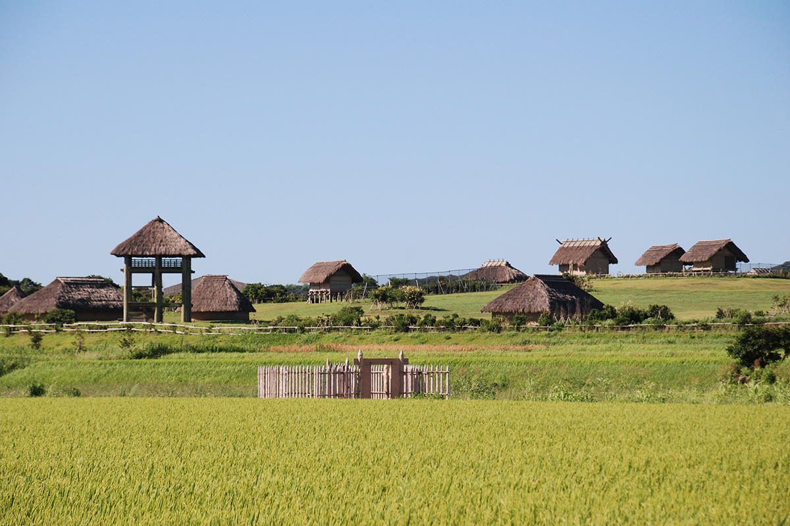
На острове нашли ещё 280 курганов периода Кофун, шесть из них охраняются государством как исторические памятники. Для небольшого острова это очень много, и по этим цифрам хорошо видно, каким важным местом был Ики для древней Японии.
Историю острова лучше всего изучать в городском музее Ики-коку. В нём собраны находки и документы, связанные с обменом с материком и Кореей. Подлинные предметы соседствуют с интерактивными экспозициями, где можно представить себе, как жили люди в те времена.
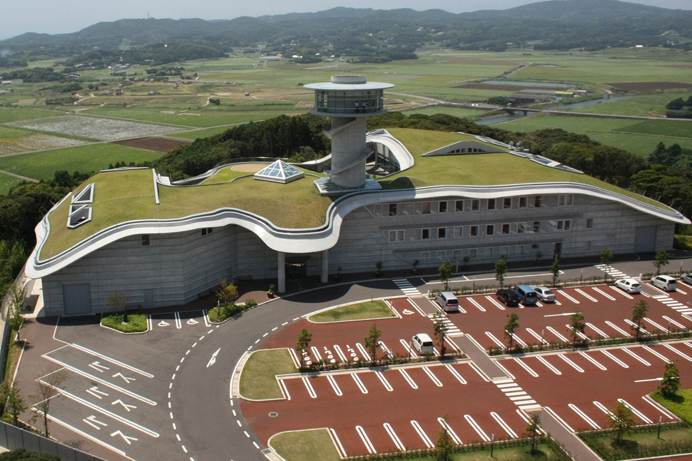
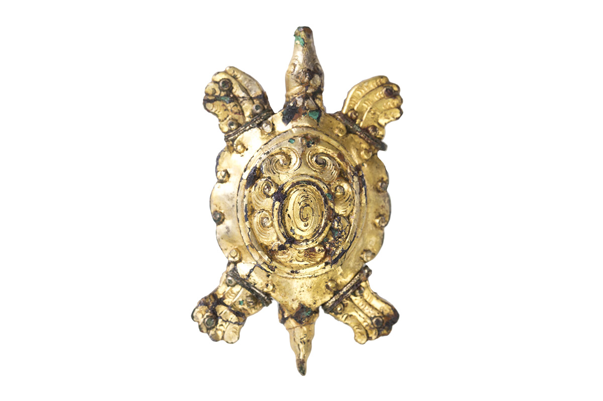
Стоянка Харуноцудзи
- Адрес
- префектура Нагасаки, Ики, Асибэ-тё, Фукаэ-Цурукамэ-фурэ, 1092-1
- Телефон
- +81 920-45-2065
- Выходные
- без выходных
Музей Ики-коку
- Адрес
- префектура Нагасаки, Ики, Асибэ-тё, Фукаэ-Цурукамэ-фурэ, 515-1
- Телефон
- +81 920-45-2731
- Часы работы
- 8:45–17:30, вход до 17:00
- Выходные
- понедельник (если это праздник, то следующий день)
- Цены / Вход
- постоянная экспозиция: взрослые 410 иен, старшеклассники 310 иен, школьники 210 иен
- Сайт
- iki-haku.jp
Цусима
Крепость Канэда и посредники между Японией и Кореей
Цусима веками жила рядом с Корейским полуостровом и выработала собственную культуру. В 663 году в битве при Пэккане японо-пэкческое войско столкнулось с армиями Тан и Силлы, и отношения с материком испортились. Для защиты на острове разместили пограничную стражу сакимори и поставили сигнальные огни. В те же годы беженцы из корейского государства Пэкче помогли построить горную крепость Канэда. Сегодня это особый исторический памятник, и на склонах сохранились каменные стены и остатки водных ворот.
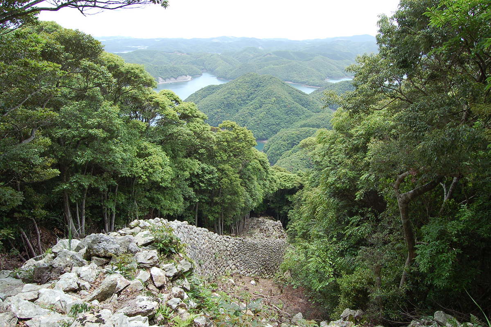
В Средние века правители острова из рода Со держали в своих руках всю торговлю и дипломатию с Кореей. При Хидэёси Тоётоми (1537–1598), военном правителе, объединившем Японию, начались походы в Корею 1592–1598 годов, и отношения между странами прервались. Род Со добивался их восстановления любыми средствами, вплоть до подделки государственных грамот. В итоге в период Эдо Цусима стала окном мирной дипломатии, символом которой были корейские посольства тёсэн цусинси.
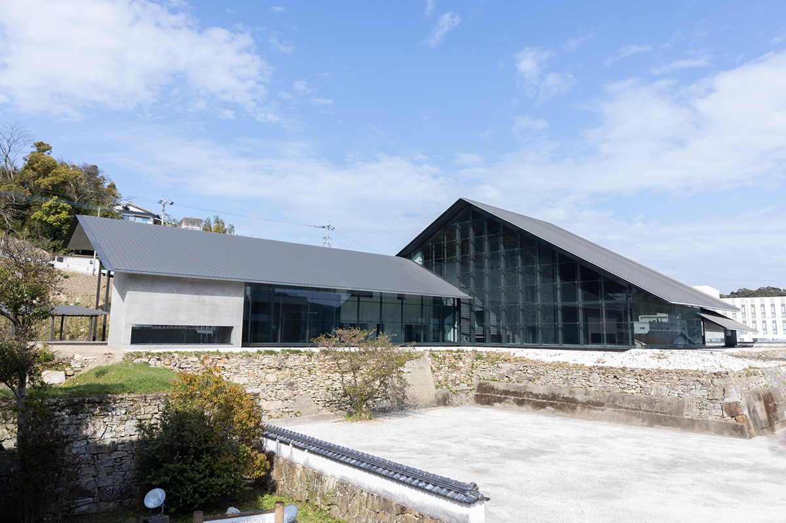
Всю эту историю, от древности до наших дней, можно проследить в Музее Цусимы.
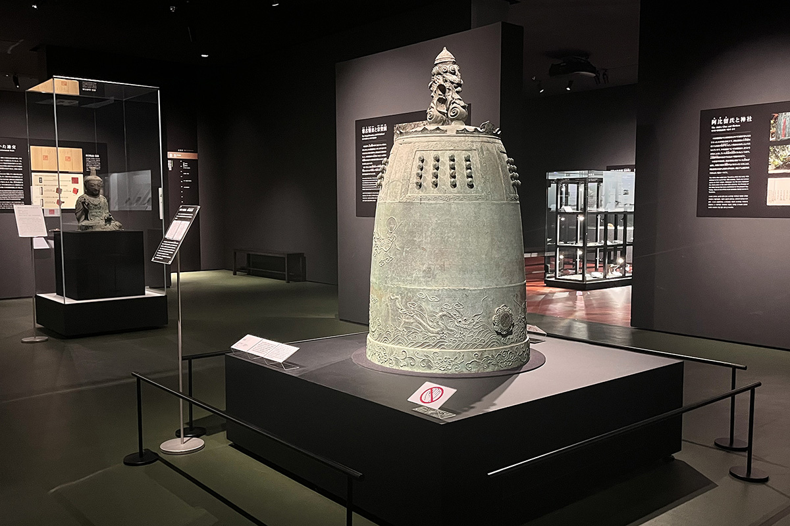
Крепость Канэда
- Адрес
- префектура Нагасаки, Цусима, Мицусима-мати, Куросэ, Сирояма
- Выходные
- без выходных
Музей Цусимы
- Адрес
- префектура Нагасаки, Цусима, Идзухара-мати, Имаясики, 668-2
- Телефон
- +81 920-53-5100
- Часы работы
- 9:30–17:00
- Выходные
- четверг
- Цены / Вход
- постоянная экспозиция: взрослые 550 иен, студенты и старшеклассники 330 иен, школьники 220 иен
Гото
Последняя гавань перед Китаем
Острова Гото тянутся цепочкой у края Восточно-Китайского моря. Когда японские посольства в Танский Китай, кэнтоси, перестали ходить через Ики и Цусиму и стали пересекать Восточно-Китайское море напрямую, Гото оказались последней японской гаванью на их пути.
На северо-западной оконечности острова Фукуэ, на полуострове Миираку, стоит памятник со словами «дзихонгай», «покидаю край родной земли». Их оставил монах Кукай (774–835), известный также как Кобо-дайси, основатель школы Сингон, который сам плавал в Китай с посольством. В «Дневнике эфемерной жизни» («Кагэро никки»), написанном в X веке, Миираку названа «островом, где можно встретить умерших». Полуостров стал поэтическим образом: остров на границе с чужими землями и остров западного рая, где живут ушедшие.
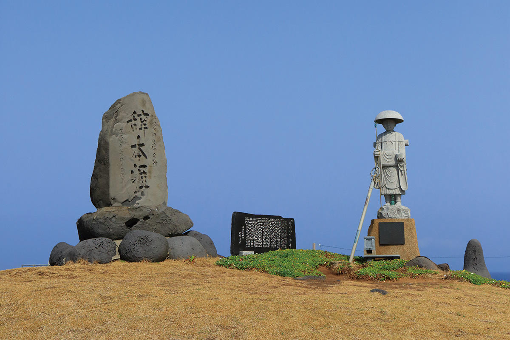
Историю посольств, поздних пиратов вако, христианства и княжества Гото лучше всего изучать в Историческом музее Гото. Он стоит на месте второго двора замка Фукуэ, который также называют замком Исида, и показывает историю островов от древности до наших дней.
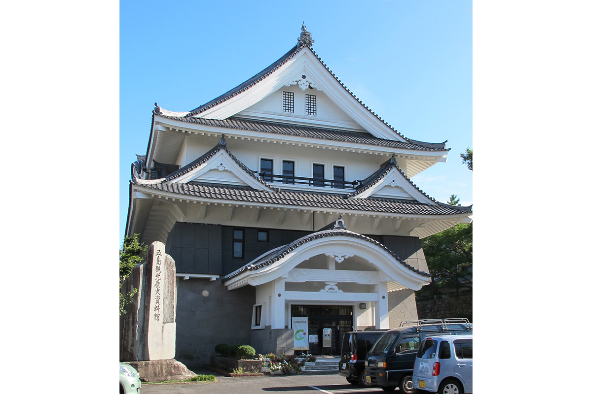
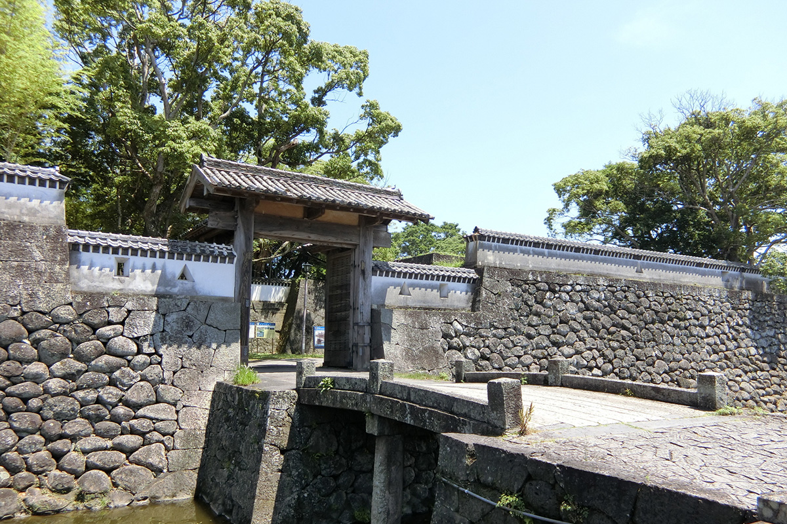
Памятник «Дзихонгай»
- Адрес
- префектура Нагасаки, Гото, Миираку-мати, Касива
- Телефон
- +81 959-84-3111 (отделение мэрии Гото в Миираку)
- Выходные
- без выходных
Исторический музей Гото
- Адрес
- префектура Нагасаки, Гото, Икэда-мати, 1-4
- Телефон
- +81 959-74-2300
- Часы работы
- до мая 9:00–17:00, с июня по сентябрь 9:00–18:00, вход за 30 минут до закрытия
- Выходные
- с 29 декабря по 3 января, иногда закрывается на техническое обслуживание
- Цены / Вход
- взрослые 300 иен, студенты и школьники 100 иен
Синкамигото
Гавани купцов, ждавших попутного ветра
Город Синкамигото занимает острова Накадори и Вакамацу с соседними островками в составе архипелага Гото. Здесь тоже остались предания о посольствах в Китай и следы безымянных морских торговцев. Каменные надгробия на острове Хиносима относятся к периоду от Средневековья до раннего Нового времени. Камень для них привозили не только с Кюсю, но и из районов Кансая и других мест, и по нему видно, как шла торговля между Японией и материком.
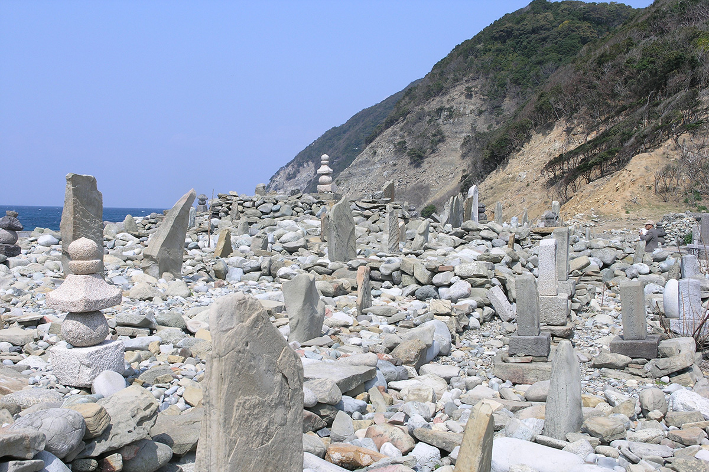
В музее Гэйхинкан рассказывают о китобойном промысле, о японском наследии, о всемирном наследии «Места тайных христиан в Нагасаки и Амакусе», а также об архитекторе Ёсукэ Тэцукаве, уроженце этих мест.
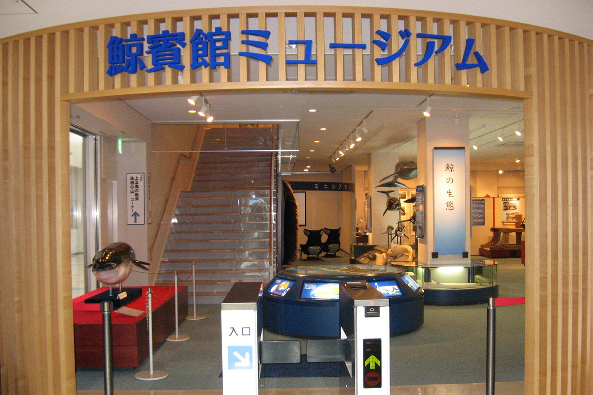
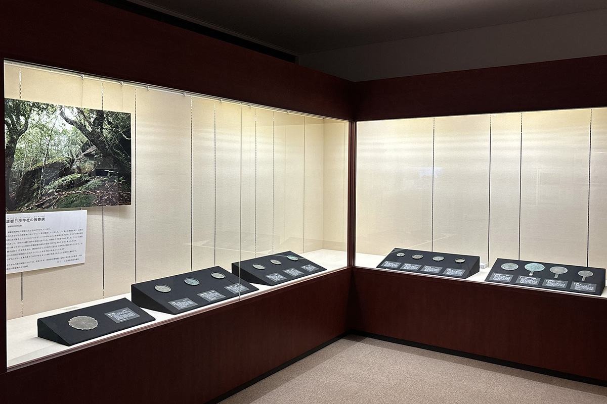
Каменные надгробия острова Хиносима
- Адрес
- префектура Нагасаки, уезд Минамимацура, Синкамигото, Хиносима-го
- Выходные
- без выходных
Музей Гэйхинкан
- Адрес
- префектура Нагасаки, уезд Минамимацура, Синкамигото, Арикава-го, 578-36 (в здании терминала порта Арикава)
- Телефон
- +81 959-42-0180
- Часы работы
- 9:00–17:00
- Выходные
- с 29 декабря по 3 января
- Цены / Вход
- взрослые 210 иен, школьники 100 иен
Дорога
Как добраться до островов
На Ики летят из аэропорта Нагасаки примерно 30 минут. Из порта Хаката в Фукуоке скоростной джетфойл идёт до порта Асибэ около 1 часа 5 минут и до порта Гоноура около 1 часа 10 минут, паром до этих портов идёт около 2 часов 10 минут и 2 часов 20 минут. Есть и паром из Карацу до порта Индзидзи, около 1 часа 45 минут.
На Цусиму летят из Фукуоки около 30 минут и из Нагасаки около 35 минут. Джетфойл из Хакаты до порта Идзухара идёт около 2 часов 15 минут, паром до Хитакацу около 4 часов 55 минут, до Идзухары около 4 часов 30 минут.
На остров Фукуэ в Гото летят из Нагасаки около 30 минут и из Фукуоки около 45 минут. Джетфойл из порта Нагасаки до порта Фукуэ идёт от 1 часа 25 минут до 1 часа 45 минут, паром от 2 часов 10 минут до 3 часов 55 минут, из Хакаты около 8 часов 30 минут.
В Синкамигото, на остров Накадори, джетфойл из Нагасаки идёт до порта Нарао около 1 часа 15 минут, а из Сасэбо до порта Арикава около 1 часа 25 минут. Паромом из Хакаты до порта Аоката около 5 часов 55 минут.